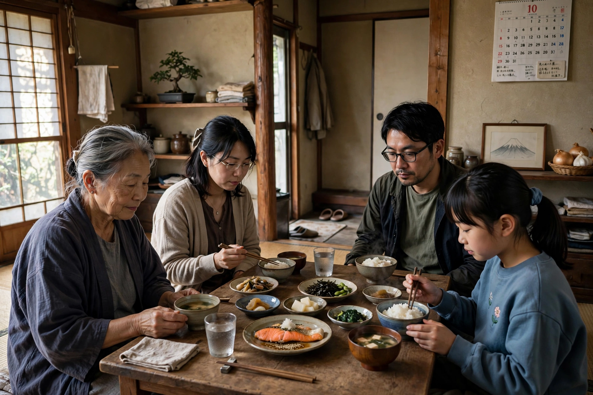

| Hirokazu Kore-eda | |
| Born | June 6, 1962, Kiyose, Tokyo, Japan |
|---|---|
| Occupation | Film director, screenwriter, editor |
| Years active | 1989–present |
| Notable work | Nobody Knows, Still Walking, Shoplifters |

Hirokazu Kore-eda (是枝 裕和, Koreeda Hirokazu; born June 6, 1962) is a Japanese film director, screenwriter, and editor known for contemplative dramas about family, memory, loss, and childhood. His film Shoplifters (2018) won the Palme d'Or at the Cannes Film Festival.
Kore-eda began in television documentaries before making his feature debut with Maborosi (1995), which won the Golden Osella at Venice. After Life (1998), in which the recently dead choose one memory to keep for eternity, brought international acclaim. Nobody Knows (2004), about four children abandoned by their mother, earned its fourteen-year-old star Yūya Yagira the Best Actor prize at Cannes.
His subsequent films — Still Walking (2008), I Wish (2011), Like Father, Like Son (2013, Jury Prize at Cannes), Our Little Sister (2015), and After the Storm (2016) — form a sustained meditation on family bonds and absence. Shoplifters (2018), about a poor household of petty thieves who take in a neglected girl, became his biggest success in Japan and abroad. He then worked internationally with The Truth (2019) in French and Broker (2022) in Korean.
Often compared to Yasujirō Ozu, Kore-eda works with restraint: static or gently moving frames, naturalistic performances — especially from children, whom he directs without giving them full scripts — and stories that accumulate meaning from everyday detail.